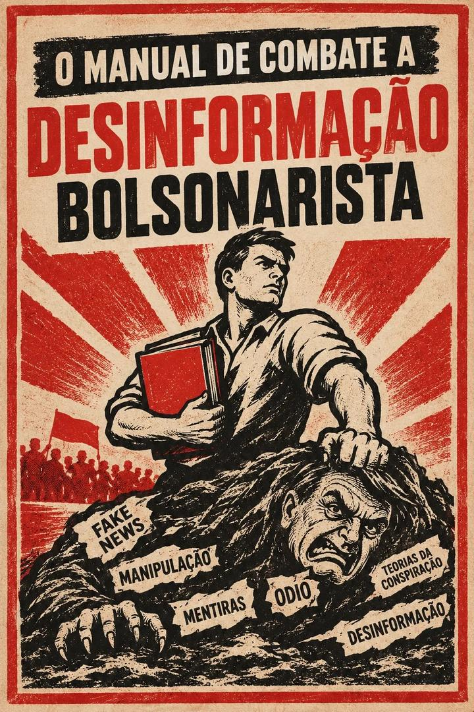

Respeitamos o pensamento de direita. Conservadorismo e liberalismo são posições legítimas. O que combatemos é a desinformação e a manipulação em massa, e os boatos que o movimento bolsonarista espalha, com fato, fonte e argumento, não com insulto.
Só afirmamos o que podemos provar. Confira sempre a fonte antes de citar. Dica: use “Adicionar à tela inicial” no menu do navegador para abrir como aplicativo.
Nenhuma frase encontrada. Use o método na aba “Método”: peça a fonte, o contexto, e responda uma vez.
Mande para quem te passou este manual, no WhatsApp, pelo grupo ou no privado. Ela vira um caso depois de conferida, com fonte.
Mande só o texto da afirmação. Sem o nome, a foto ou o perfil de quem escreveu.
1 · O fato. O que realmente sabemos.
2 · A prova. Onde conferir.
3 · A pergunta. Qual evidência sustenta a afirmação contrária?
Dá para checar com um documento? É fato: peça a fonte.
Depende do que cada um valoriza? É opinião: não chame de mentira.
| Generalização | “Todos”, “ninguém”, “sempre”. Pergunte: quem exatamente? |
| Medo | “Vão acabar com o Brasil.” Pergunte: qual proposta concreta? |
| Acusação sem prova | “Todo mundo sabe.” Pergunte: qual é a fonte? |
| Vídeo fora de contexto | Não mostra quando ou onde. Pergunte: quando e onde foi isso? |
| Falsa causalidade | Aconteceu depois, então foi por causa disso. Pergunte: qual a prova de que uma coisa causou a outra? |
| Desvio de assunto | Não responde e muda de acusação. Diga: primeiro essa pergunta. |
| Apelo à autoridade | “Um médico famoso falou.” Pergunte: qual estudo mostra isso? |
| Repetição | A mesma afirmação, sem prova. Repetir não é provar. |
Plataforma: pelo canal de cada rede, citando a regra violada.
Justiça Eleitoral (TSE): em período eleitoral. Confirme no site o canal vigente.
Ministério Público e Polícia: calúnia, difamação, injúria e ameaça são crimes.
Agências de checagem: Aos Fatos, Lupa, Comprova e Fato ou Fake.
Não faça justiça com as próprias mãos. Ameaçar, expor dados ou perseguir alguém é crime. Também não use contas falsas, robôs ou disparo em massa.
É prevenção: não afirmamos que está acontecendo em escala. Demitir por convicção política costuma ser tratado pela Justiça do Trabalho como discriminação, mas o tema não é pacífico e é preciso provar. Ameaça e coação eleitoral são crimes.
Não faça política em horário de trabalho nem use recursos da empresa para isso. Este texto orienta e não substitui um advogado.
Quer comentar, tirar uma dúvida ou sugerir uma resposta? Os comentários ficam no GitHub, então é preciso entrar com uma conta do GitHub para escrever.
Regras: respeite as pessoas; não coloque nome, foto ou dados pessoais de terceiros; não cole boatos sem fonte; ofensas, ataques e ameaças são apagados.